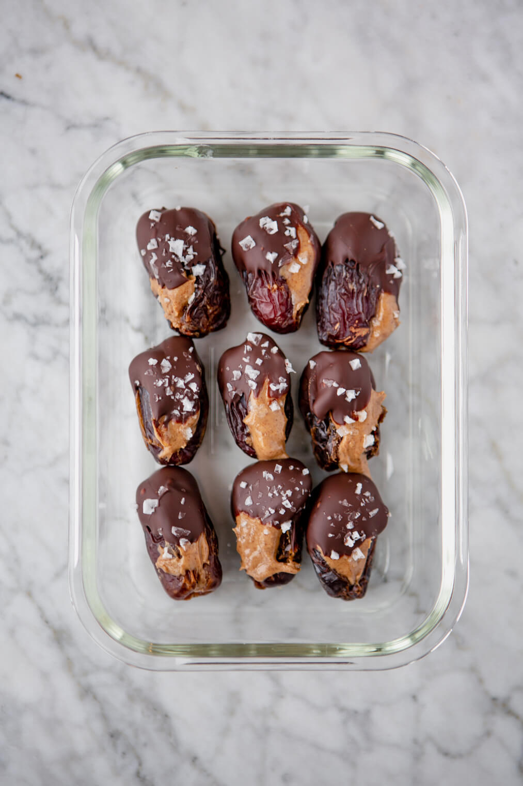

.jpg)
| S.No. | Ingredients | Quantity | Image |
|---|---|---|---|
| 1. | Baby potatoes | 10-12 | |
| 2. | Frozen peas | 3 and 1/2 cup | |
| 3. | Cumin seeds | 1 teaspoon | |
| 4. | Coriander powder | 1 teaspoon | |
| 5. | Red chilli powder | 1/2 teaspoon | |
| 6. | Garam masala powder | 1/2 teaspoon | |
| 7. | Ginger | 1 inch | |
| 8. | Oil | 2 tablespoons | |
| 9. | Salt | as required |
Step 1: Wash the baby potatoes thoroughly. keep their skin intact. chop them into two. rinse the peas as well.
Step 2: Steam (or boil) the potatoes for 5 minutes, then add the cauliflower and cook for 10 minutes more or until they’re soft.
Step 3: In the meanwhile, add the garlic, onion, ginger, tomatoes and tahini to a blender and blend until smooth.
Step 4: Add the mixture and the spices (turmeric, cumin, salt, paprika, cayenne and pepper) to a large pot, stir and
cook covered over medium-high heat for 5 minutes.
Step 5: Add the frozen peas and cook for 5 minutes more.
Step 6: Finally, add the steamed potatoes and cauliflower, stir and serve. We added some chopped fresh parsley on top and served the aloo gobi matar with some rye bread (optional).
Step 7: Keep it in a sealed container in the fridge for 4 to 5 days.
| S.No. | Ingredients | Quantity | Image |
|---|---|---|---|
| 1. | Medjool dates, pitted | 25 pieces |  |
| 2. | Almond/Peanut butter | 1/4 cup | |
| 3. | Dark chocolate, chopped | 8 ounces | |
| 4. | Coconut oil(optional) | 1 tablespoon |
Step 1: Fill each date with some almond or peanut butter to taste (about 1/2 tsp). Set aside.
Step 2: Place the dark chocolate and the oil in a saucepan and cook over medium heat, stirring occasionally until the chocolate melts.
Step 3: Pour the melted chocolate into a bowl.
Step 4: Dip each date into chocolate mixture until completely covered. Then place dates onto a lined baking sheet.
Step 5: Let the chocolate cool down at room temperature and enjoy.
Step 6: Keep the dates in a sealed container at room temperature or in the fridge for up to a week.
| S.No. | Ingredients | Quantity | image |
|---|---|---|---|
| 1. | Pears | 2 | |
| 2. | Fresh spinach | Handful(40g) | |
| 3. | Celery | 1 stalk | |
| 4. | Ginger root | 1 cm | |
| 5. | Fennel bulb | 1/4 part |
Step 1: Wash and chop all the ingredients. You don’t need to peel the pears or the ginger root, although if they’re
not organic you should.
Step 2: Put everything through the juicer.
Step 3: Our juicer has a strainer, so we don’t strain the juice, but if your juicer hasn’t one, maybe you want to strainer
your juice to get a better texture, it’s up to you.
Step 4: his green juice is better fresh, but you can also keep it in a jar or sealed container in the fridge for up to 72 hours.
Fill your juice to the top of the container to prevent oxidation. Feel free to freeze it for up to a week, but don’t fill
the container to the top or it could explode.